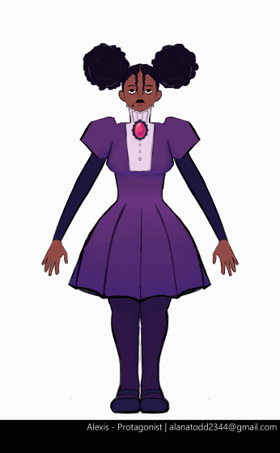
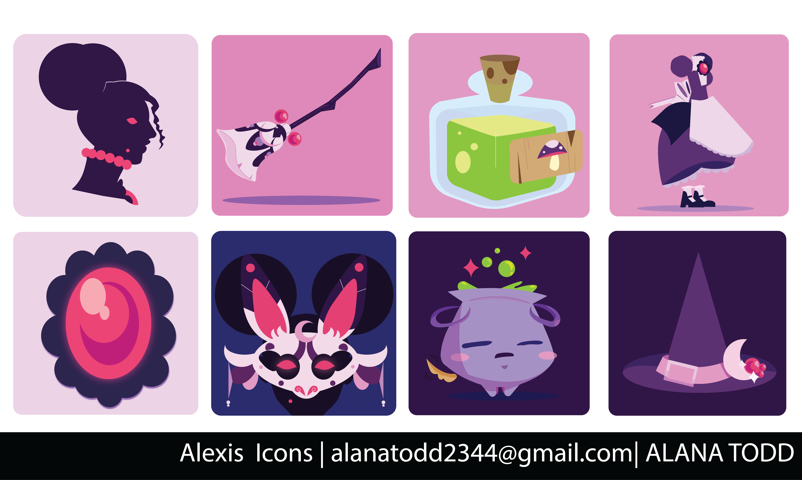

Character Development: Alexis Witherfly


Symbology
This is the symbol of the Venus Academy, the Double Eye. It represents both the Venus flytrap, where the Academy gets its namesake and the everwatching eye of the Academy.
Venus Academy is a passion project that follows Alexis Witherfly as she attends Venus Academy a few years after a devastating tragedy dealt to her and her family involving the summoning of her new contract demon. She navigates a difficult school life as she tries to find a way to fix the damage done. But, Venus Academy is not making it easy for her, the very halls themselves aim to ensnare her as she gets too close to secrets that should never be uncovered.
This is the symbol of the Venus Academy, the Double Eye. It represents both the Venus flytrap, where the Academy gets its namesake and the everwatching eye of the Academy.